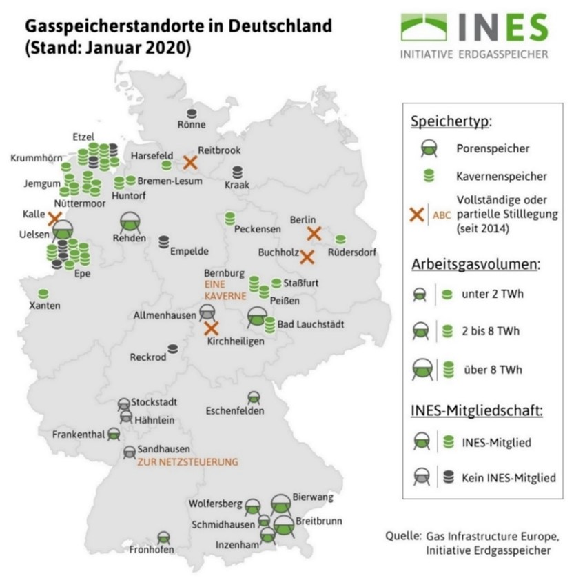

Speicherung von grünem Wasserstoff in Kavernen
Aus der Facharbeit von Jens Oster-Daum.
Die großen Mengen an Grünem Wasserstoff müssen wir in Zukunft effizient und mühelos speichern können. Dieses Vorhaben ist in großen unterirdischen Hohlräumen, Kavernen, möglich. In Deutschland findet man zurzeit schon einige Kavernen, die bis jetzt als Erdgasspeicher genutzt werden. Eine Kaverne in Bad Lauchstädt, dient als Forschungskaverne zum Speichern von Wasserstoff. Reichen die bisherigen Standorte nicht aus, ist es möglich mithilfe eines sogenannten Solprozesses neue Salzkavernen zu errichten.

Eingespeichert wird das Gas mithilfe von Kompressoren, die den
Wasserstoff (der aus den Pipelines mit ca. 60 bar kommt) auf einen Druck von 200 bar. So herrscht
in einer Kaverne bei maximaler Befüllung ein Druck bis zu 200 bar und
eine Temperatur von ungefähr 30°C. Beim Ausspeichern kann mit einer
Turbine, durch die das Gas strömt, zusätzlich noch einmal elektrische
Energie gewonnen werden, welche man beim Einspeichern durch die
Verdichter aufbringen musste. Gespeicherte Energiemenge:
Beispielrechnung an einer Erdgaskaverne mit einem Volumen von
989.600 m³:
Berechnen der Teilchenanzahl N:
\[p \cdot V = k\cdot N\cdot T\]
\[N = \frac {p\cdot V} {k\cdot T}\]
\( =4,73 \cdot 10^{33}\) Teilchen
Berechnen der Stoffmenge n:
\(N_A = {N \over n}\) Avogadro-Konstante: \(N_A=6,022 \cdot 10^{23} {1\over mol} \) \[n={N\over N_A}\] \[=\frac {4,73\cdot 10^{33} \cdot mol} {6,022 \cdot 10^{23} \cdot 1 }\] \[=7,8 \cdot 10^9 \ mol\]
Berechnen der chemischen Energie: Die chemische Energie in Wasserstoff beträgt \(289,5 {kJ \over mol}\).
\[E_{ch}=289,5 \cdot 7,8 \cdot 10^9 \ kJ\] \[=2,258 \cdot 10^{12} \ kJ\] \[=2,25 \ PJ\] \[=6,25 \cdot 10^8 \ kWh\]
Ist die Kaverne bis auf 200 bar mit Wasserstoff gefüllt, sind dort 2,25 PJ bzw. \(6,25 \cdot 10^8 \ kWh\) an Energie gespeichert. Bei einem Jahresenergieverbrauch eines Einfamilienhauses von 3 500 kWh, könnte man mit einmaliger Befüllung der Kaverne ca. 178 500 Einfamilienhaushalte ein Jahr lang mit Energie versorgen.